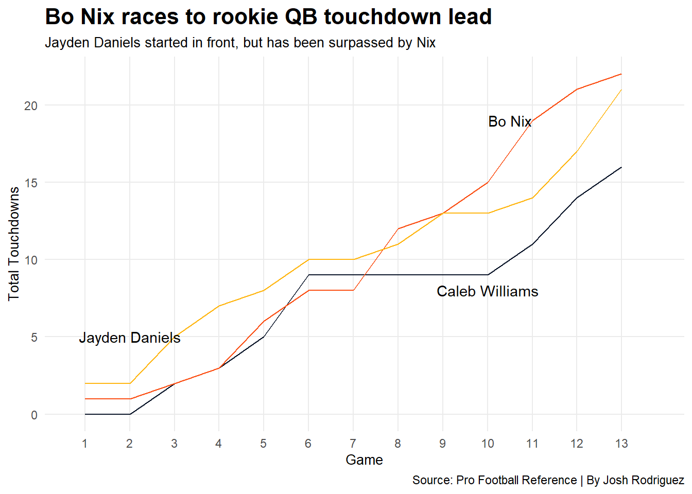

In the 2024, there were six quarterbacks taken in the first 12 picks, which is a record. Each of the first three picks were quarterbacks. The first three were Caleb Williams to the Bears, Jayden Daniels to the Commanders and Drake Maye to the Patriots. The Falcons shocked everybody when they took Michael Penix Jr. at eight overall. JJ McCarthy went to the Vikings 10th overall and Bo Nix was picked by the Broncos at 12th overall.
Any time a quarterback is taken this high, there are very lofty expectations for them. They are supposed to be the savior of the franchise.
At the moment, the common consensus seems to be that Daniels and Nix have performed the best out of all the rookies. Daniels started out in front, but Nix has caught up, and maybe surpassed Daniels, depending on who you ask.
In this article, I will try and determine which first round quarterback has been the best so far. I will not include JJ McCarthy, since he is out for the year with an injury. I also will not include Michael Penix Jr., since he is still sitting behind Kirk Cousins. I also won’t include, Drake Maye, because he didn’t start until the sixth game. I will be comparing Caleb Williams, Jayden Daniels and Bo Nix.
First, we will look at total touchdowns from each quarterback as the season progressed. This combines passing, rushing and receiving touchdowns (Yes, Bo Nix had a receiving touchdown.)
Code
library(tidyverse)library(patchwork)library(gt)library(ggrepel)rookies <-read_csv("data/rookies2024.csv")step <- rookies|>mutate(TotalTD = PassTD + RushTD + RecTD ) |>group_by(QB) |>mutate(SeasonTD =cumsum(TotalTD)) |>mutate(SeasonYds =cumsum (PassYds)) |>mutate(SeasonINT =cumsum (Int))selectTD <- step |>select(TotalTD, SeasonTD, Game)nixTD <- selectTD |>filter(QB =="Bo Nix")danielsTD <- selectTD |>filter(QB =="Jayden Daniels")williamsTD <- selectTD |>filter(QB =="Caleb Williams")ggplot() +geom_line(data = williamsTD, aes(x = Game, y = SeasonTD, group = QB), color ="#0B162A" ) +geom_line(data = nixTD, aes(x = Game, y = SeasonTD, group = QB), color ="#FB4F14" ) +geom_line(data = danielsTD, aes(x = Game, y = SeasonTD, group = QB), color ="#FFB612" ) +annotate("text", x =10.5, y =19, label ="Bo Nix" ) +annotate("text", x =2, y =5, label ="Jayden Daniels" ) +annotate("text", x =10, y =8, label ="Caleb Williams" ) +labs(x ="Game", y ="Total Touchdowns", title ="Bo Nix races to rookie QB touchdown lead", subtitle="Jayden Daniels started in front, but has been surpassed by Nix",caption="Source: Pro Football Reference | By Josh Rodriguez") +scale_x_continuous(breaks=c(1, 2, 3, 4, 5, 6, 7, 8, 9, 10, 11, 12, 13), limits=c(0.75, 13.75) ) +theme_minimal() +theme(plot.title =element_text(size =16, face ="bold" ),plot.subtitle =element_text(size =10),axis.title =element_text(size =10),panel.grid.minor =element_blank() )

As you can see, Jayden Daniels started the season with the lead in total touchdowns. He held that lead all the way until game 8. Daniels cooled off a little at this point, but has rebounded and currently sits at 21 total touchdowns
Bo Nix took the lead in total touchdowns after game 8. Nix started off very slowly in this category. It wasn’t until his eight game where he really started to take off in total touchdowns. Since that point, he has been a touchdown machine. He currently leads the rookies with 22 total touchdowns.
Caleb Williams, on the other hand, has never led in this category. He is currently in a distant third with only 16 total touchdowns. He even had a four game stretch from games seven though 10 where he didn’t have a single touchdown.
In this category, Bo Nix has the edge, especially as of late. He leads in total touchdowns, but it is even more impressive if you go back to game eight. In that six game strech, he has 14 total touchdowns.
Next, we will look at passing yards in each game.
Code
yards <- step |>select(PassYds, Game)nixYds <- yards |>filter(QB =="Bo Nix")danielsYds <- yards |>filter(QB =="Jayden Daniels")williamsYds <- yards |>filter(QB =="Caleb Williams")ggplot() +geom_line(data = williamsYds, aes(x = Game, y = PassYds, group = QB), color ="#0B162A" ) +geom_line(data = nixYds, aes(x = Game, y = PassYds, group = QB), color ="#FB4F14" ) +geom_line(data = danielsYds, aes(x = Game, y = PassYds, group = QB), color ="#FFB612" ) +annotate("text", x =4, y =50, label ="Bo Nix" ) +annotate("text", x =8.25, y =30, label ="Jayden Daniels" ) +annotate("text", x =9, y =110, label ="Caleb Williams" ) +labs(x ="Game", y ="Passing Yards", title ="Rookie quarterbacks stay close in terms of yards", subtitle="All three have had highs and lows",caption="Source: Pro Football Reference | By Josh Rodriguez") +scale_x_continuous(breaks=c(1, 2, 3, 4, 5, 6, 7, 8, 9, 10, 11, 12, 13), limits=c(0.75, 13.75)) +scale_y_continuous(breaks=c(50, 100, 150, 200, 250, 300, 350) ) +theme_minimal() +theme(plot.title =element_text(size =16, face ="bold" ),plot.subtitle =element_text(size =12),axis.title =element_text(size =10),panel.grid.minor =element_blank() )
Code
ggsave("image.png")
In this chart, you can see that each quarterback has had highs and lows. Caleb Williams is the only one to have multiple 300 yard passing games. However, It seems that he is lower than the others in many weeks.
Bo Nix has had more lows earlier in the season, especially in game four, where he only had 60 yards (The Broncos still won that game.) However, similarly to the touchdown chart, starting in game 8, he has consistently had higher passing yards numbers.
Jayden Daniels has been very consistent. The one valley was a game where he left early with an injury. He has been the most consistent in this category throughout the season, but Nix has been ahead as of late.
Based on this, I think Daniels has been the best in this category if you look at the whole season. However, Nix has topped Daniels as of late.
In order to put this chart together, we will now look at the passing yards per game for each quarterback throughout the entire season.
By: Josh Rodriguez | Source: Pro Football Reference
Again, Bo Nix and Jayden Daniels are very close in this category, while Caleb Williams lags behind. Again, the interesting thing about Williams is that he is the only one of the three to have multiple 300 yard passing games with three. This again points to his valleys being much lower than the other two, which can be seen in the previous chart.
Next, we will look at yards per pass attempt for each quarterback
Code
YPAbar <- rookies2 |>select(Player, YPA)nixypa <- YPAbar |>filter (Player =="Bo Nix")danielsypa <- YPAbar |>filter (Player =="Jayden Daniels")williamsypa <- YPAbar |>filter (Player =="Caleb Williams")ggplot() +geom_bar(data=YPAbar, aes(x=reorder(Player, YPA), weight=YPA), fill ="lightgrey") +geom_bar(data=nixypa, aes(x=reorder(Player, YPA), weight=YPA), fill ="#FB4F14")+geom_bar(data=danielsypa, aes(x=reorder(Player, YPA), weight=YPA), fill ="#FFB612")+geom_bar(data=williamsypa, aes(x=reorder(Player, YPA), weight=YPA), fill ="#0B162A")+coord_flip() +labs(title ="Jayden Daniels is letting it fly",subtitle ="Daniels is averaging almost eight yards per attempt",x ="", y ="Yards per Attempt" ) +theme_minimal() +theme(plot.title =element_text(size =18, face ="bold"),axis.title =element_text(size =14), plot.subtitle =element_text(size =14), panel.grid.minor =element_blank() )
In this category, Jayden Daniels leads the bunch, averaging just under eight yards per attempt. Bo Nix is at 6.5 yards per attempt, while Caleb Williams is at 6.3 yards per attempt. In this category, Daniels clearly has the upper hand.
Finally, we will look at passer rating, which is on a scale from 0 to 158.3. It combines completion percentage, yards per attempt, touchdown percentage and interception percentage.
Daniels is over 10 points better thatn Nix and Williams
Quarterback
Passer Rating
Jayden Daniels
99.4
Bo Nix
87.9
Caleb Williams
87.8
By: Josh Rodriguez | Source: Pro Football Reference
In this category, Daniels again leads by a decent margin.
Based on all of this data, it seems clear that the best two rookie quarterbacks to this point are Jayden Daniels and Bo Nix. Based on the first two charts, I think the sentiment that Daniels started out in the lead, while Nix has caught up and maybe surpassed Daniels is correct.
As a Broncos fan myself, I have been very happy with the improvement of Bo Nix. There is a night and day difference between his first two games and his play as of late. He was flat out bad in those first two games. However, he has been fantastic as of late, highlighted by a nearly flawless game against the Falcons.
However, especially based on his lead in yards per attempt and passer rating, I would say that Jayden Daniels should have a very slight lead over Bo Nix in the offensive rookie of the year conversation. However, Bo Nix has been the better quarterback as of late. If Nix continues to play as well as he has lately, I think he should overtake Daniels as the favorite for that award.
Finally, I want to look at why each rookie quarterback has had his success and struggles.
Quite frankly, the Bears have screwed over Caleb Williams in his first season. He was the consensus top overall pick for a reason. However, they gave him a coach who came into the years on the hot seat in Matt Eberflus, plus a bad offensive coordinator in Shane Waldron
The Bears knew they were going to draft Caleb Williams with their first overall pick from the Panthers. They knew Eberflus hadn’t been a great coach in his first two years with the team. They should have fired Eberflus before the season and hired a new coach who they knew would be the best for their new quarterback. Instead, they stuck with their lame duck coach, and Williams has paid for that. They fired their head coach the year after they drafted Mitch Trubisky and Justin Field as well. Not a good strategy.
If Williams gets a good coach around him, I think he can be a very good quarterback. However, based on the history of the Chicago Bears, I’m worried that won’t happen.
Unlike the Bears, the Commanders hired a new coach for their new quarterback. They had the second overall pick, so they knew they would have their pick of a quarterback after Williams. Hiring a defensive coach in Dan Quinn was interesting, but hiring Kliff Kingsbury as offensive coordinator has seemed to go very well so far.
Unlike the Bears and Commanders, the Broncos weren’t in a great position to draft a new quartberback, as they had the 12th overall pick. However, second year head coach Sean Payton did his homework in looking at the quarterbacks that the Broncos had a realistic chance of drafting, which were JJ McCarthy, Bo Nix, and Michael Penix Jr. He decided on Nix, drafting him higher then many “experts” thought he should go.
So far, it seems that the Payton and Nix combo is the absolutely perfect pairing. Nix seems to work very well in Payton’s offense, and has continually gotten better as the season has gone on.
Simply put, Nix and Daniels went in to good coaching situations, Williams did not. No matter how much talent a rookie quarterback has, he needs a good coach to help him transition to the NFL.
In the end, I think that the 2024 NFL quarterback draft class could be looked at as one of the best ever. Obviously, Jayden Daniels and Bo Nix have had success so far, which I think will continue. If, and this is a big if, if Caleb Williams gets the right coahces around him, I think he could end up being great.
Even though he wasn’t featured in this article, Drake Maye has shown flashes as a rookie. However, I think he probably has the worst roster around him among the rookies. If he gets better players around him, I think he has potential to be great as well. As for JJ McCarthy and Michael Penix Jr., we will see what happens once they play.
As of now, Jayden Daniels and Bo Nix are the best rookie quarterbacks in the NFL.